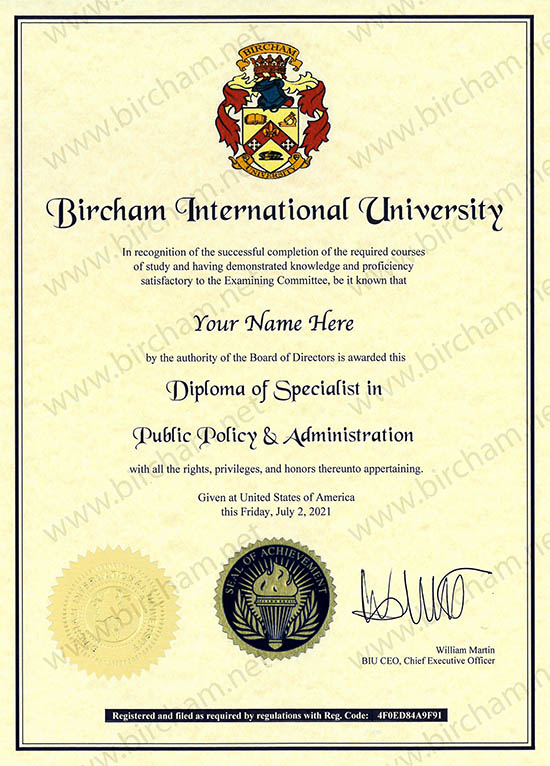

Освіта
У 2018 я отримала диплом магістра за фахом Психологія (спеціальна, клінічна) в НПУ ім. Драгоманова.
Основна моя психотерапевтична освіта - чотирирічна програма з когнітивно-поведінкової терапії в
Українському Інституті Когнітивно-Поведінкової Терапії. Там же я проходила ординатуру з КПТ залежностей
та освітню програму зі схема-терапії. У 2023 році я завершила базову освіту з діалектичної поведінкової
терапії.
Я постійно прохожу супервізії, беру участь в інтервізійних групах, навчальних семінарах з актуальних
питань, цікавлюсь результатами нових досліджень, читаю профільну літературу - це загалом складає 400+
годин на рік.
Вища освіта
2012 - 2018 рр. - Національний педагогічний університет імені М. П. Драгоманова, магістр, спеціальність: психологія (спеціальна, клінічна).

1992 - 1997 рр. - Національний технічний університет України "КПІ", Інститут автоматизованих систем управління інформацією
Курси та тренінги
15-17.05.2015 - «Освітній проект підтримки психологів і волонтерів у роботі з постраждалими від військових дій».
02-06.11.2015 - «Самостійне управління посттравматичним стресовим розладом»
05-06.11.2015 - «Основи діагностики та надання термінової психологічної допомоги при гострій травмі» (16 академічних годин), Оксана Наконечна
08-12.02.2016 р. - Навчальний курс «Кризове втручання», розроблений в рамках проекту «Розбудова потенціалу українських місцевих НУО та суспільств у світлі збройного конфлікту на Сході», д-р Барбора Кучарова, Пітер Брнула (Угорщина).
2015 - 2016 - «Травматотерапевт-консультант» (150 академічних годин), Євген Тичковський
07.2016 -10.2016 - «Особливості надання психологічної допомоги жертвам насильства та тортур» (64 академічні години), Марія Ксоняжак, Катажина Янчевськ-Аркон, Наталія Басько, Себастьян Хмелінський (Польща)
2016 - «Особливості надання психосоціальної допомоги з акцентом на стійкість» (50 академічних годин), Віра Чорнобрівкіна.
2017 - «Психологічна стійкість воїна» (35 навчальних годин), Зоран Комар (Хорватія)
2018 р. – Модуль «Основи травмофокусу» в межах навчальної програми «Психотерапія травматофокусу» в Institut fur Neuropsychotherapie (Австрія)
14-15.03.2019 – «Розлади, пов`язані з вживанням психоактивних речовин, та ризик ВІЛ серед ветеранів в Україні» (16 академічних годин) , Ігор Куценок (США)
6-8.11.2020 р. – «КПТ при біполярному розладі і психозах» (20 навчальних годин), Dr. Yusuf Sivrioglu (Туреччина)
26-27.03.2021 р. – «КПТ при шизофренії – просунутий рівень» (20 навчальних годин), Dr. Yusuf Sivrioglu (Туреччина)
2021-2022 р. – «Схема-терапія» в Українському інституті когнітивно-поведінкової терапії (Львів, Україна)
2018 – 2022 рр. - 4-річна навчальна програма «Когнітивно-поведінкова терапія» в Українському інституті когнітивно-поведінкової терапії (Львів, Україна)
2021 – 2022 рр.- річна ординатура «Когнітивно-поведінкова терапія залежностей» в Українському інституті когнітивно-поведінкової терапії (Львів, Україна)
2022р - Individual Schema Therapy Training Program (Maria Cristina Sterie, MA & Magdalena Kitlowska, MA)
2022 – 2023 – навчання у програмі Dialectical Behavioral Therapy (Тетяна Рейнхардт)